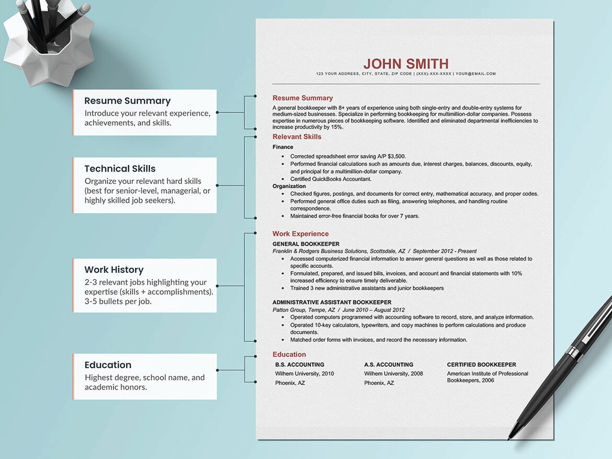
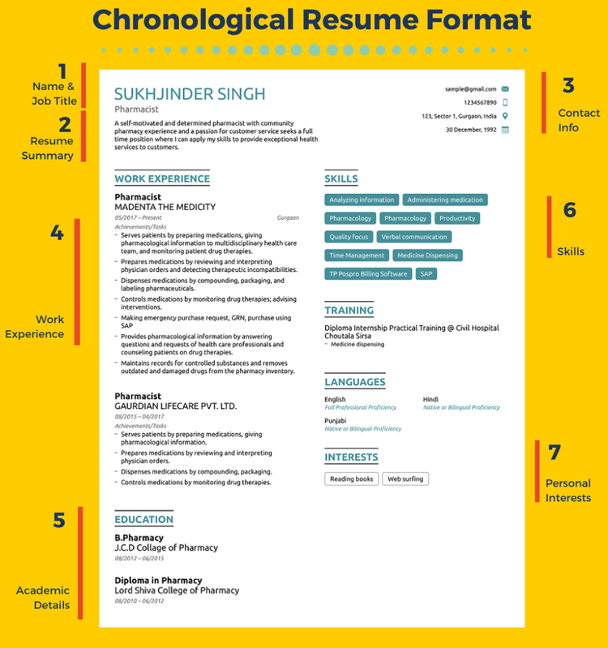
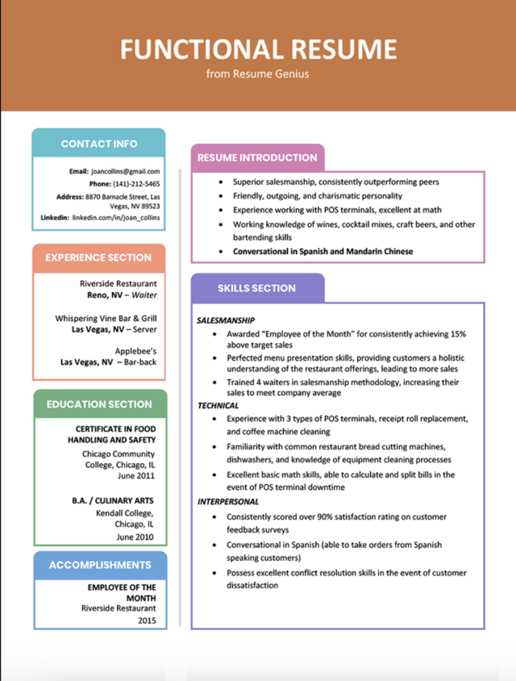
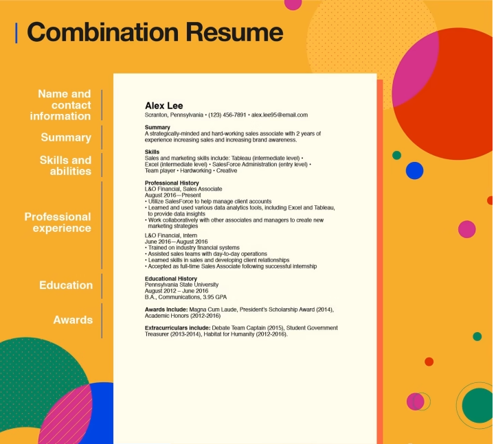
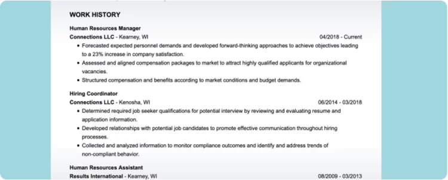
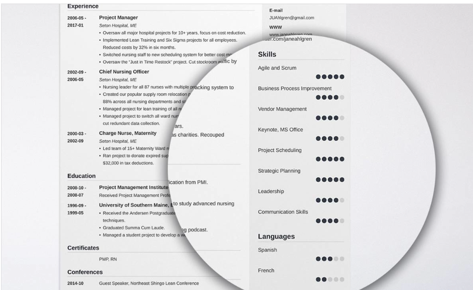

Forty percent of hiring managers spend less than a minute reviewing a resume. That’s why you need a strong and eye-catching document that perfectly captures your relevant skills and work experience to make the cut.
If you’re wondering,” How do I write a resume for a job application?,” “How do I make a resume successfully?,” or “How do I update my resume?,” don’t worry! We’re here to help. In this guide, we will show you how to make a good resume in just a few easy steps and detail exactly what to include in each resume section.
We’ll cover:
- How to write a resume.
- How to prepare a great resume
- Picking the right best format.
- What to put in your resume contact information.
- How to write a resume summary or objective statement.
- What a resume work experience section should include.
- How to make a great resume skills section.
- What to put in a resume certification, licenses and training section.
How to write a resume
Chances are, if you write a resume well, you’ll be booked for interviews for every job you seek. But what’s the secret? How do you make a resume that employers respond to?
Keep reading! We’ve broken down the instructions for how to create a resume, step-by-step.
step 1
Gather your professional information to prepare to write a great resume.

Preparation is key to writing a resume that stands out. Having your essential information ready will save you time and ensure you put your best foot forward. Here’s how to prepare a resume effectively.
Proper resume preparation means you must take the time to review your relevant qualifications and compare them to the requirements for your target job.
Then make a list of your:
- Significant accomplishments from previous jobs.
- Soft, hard and technical skills and match them to the required skills in the job ad.
- Employers’ names, dates of hire, locations, job titles and responsibilities.
- Educational credentials such as a college degree, certifications or licenses.
step 2
Pick the best resume format for your needs
Now that you’ve prepared your information, here’s a secret on how to create a resume that many job seekers overlook: You have to choose a suitable resume format before you can begin to write a resume.
How to choose the best resume format? There are three standard formats. Each uses the same resume sections but organizes them differently, so choose one that works best for your work experience level and your professional goals.
Chronological resume format
Functional resume format
Combination resume format
step 3
Add your contact information.
Make sure your contact information is up-to-date and easy to find. Always put it at the top, in the header.
Here’s what to include in your resume contact information:
- Full name
- Phone number
- Professional email address
- City and ZIP code
- A link to your professional social media account, website or portfolio if you have them.
step 4
Make a resume work history section
Format this resume section by listing jobs in reverse-chronological order, with the current or latest position at the top and display. Here’s how to create a resume work experience section. You’ll need:
- Your title
- Company name
- Company location (city and state)
- Dates of employment (month and year)
- Three-to-five bullet points with your top work achievements and duties
for example:
step 5
Create a resume skills section to highlight your strengths.
When thinking about what to put on a resume skills section, aim for an average of six to eight of your top strengths, as long as they are relevant to the job you want. If you are changing careers or applying for your first job,, focus on transferable skills like communication and critical thinking, which can apply to almost any job.
